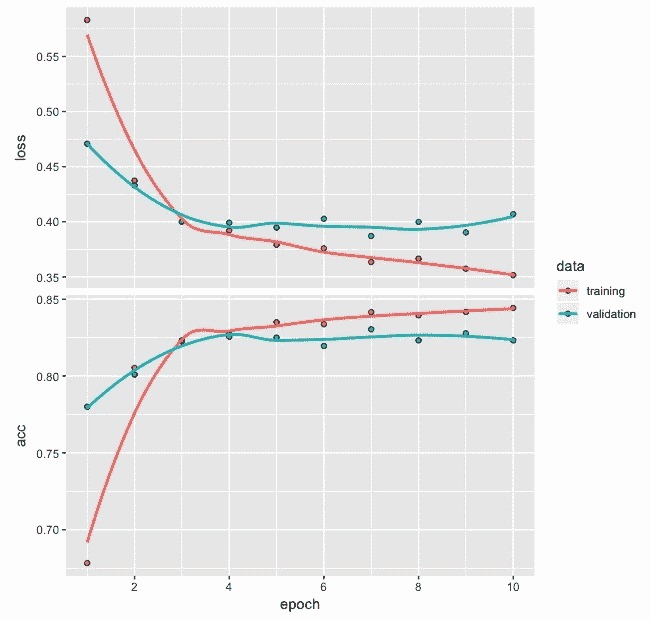
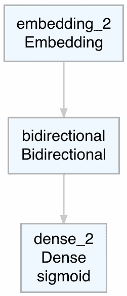
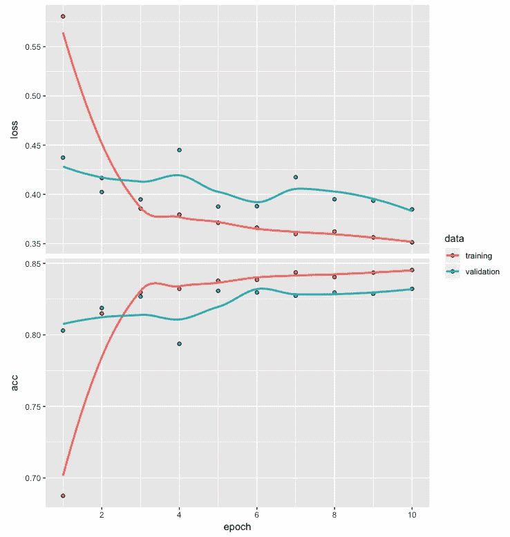

在前一章中，我们使用递归神经网络为以单词序列为特征的文本数据开发了一个电影评论情感分类模型。长短期记忆 ( LSTM )神经网络是一种特殊类型的递归神经网络 ( RNNs )对涉及序列的数据很有用，并提供我们将在下一节讨论的优势。本章说明了使用LSTM神经网络进行情感分类的步骤。将LSTM网络应用于商业问题的步骤可能包括文本数据准备、创建LSTM模型、训练模型以及评估模型性能。
更具体地说，在本章中，我们将讨论以下主题:
在前一章中，我们已经看到，当处理涉及序列的数据时，递归神经网络提供了不错的性能。使用LSTM网络的一个关键优势在于，它们解决了消失梯度问题，该问题使得对于长的单词或整数序列的网络训练变得困难。梯度用于更新RNN参数和用于长的单词或整数序列；这些梯度变得越来越小，以至于实际上无法进行网络训练。LSTM网络有助于克服这个问题，并使捕获相距较远的序列中的关键字或整数之间的长期相关性成为可能。例如，考虑以下两个句子，其中第一个句子很短，第二个句子相对较长:
在这些句子中，抓住句子主要精髓的两个重要单词是 like 和chocolate。在第一句话中，单词如和巧克力彼此更接近，它们之间只隔着两个单词。另一方面，在第二句话中，这两个词之间被多达14个词隔开。LSTM网络被设计用来处理这种在较长的句子或较长的整数序列中观察到的长期依赖性。在这一章中，我们集中于应用LSTM网络来开发一个电影评论情感分类模型。
我们将继续使用IMDB电影评论数据，我们在上一章中使用了递归神经网络。这些数据已经以一种格式可用，我们可以用它来开发深度网络模型，只需要最少的数据处理。
让我们来看看下面的代码:
# IMDB data
library(keras)
imdb <- dataset_imdb(num_words = 500)
c(c(train_x, train_y), c(test_x, test_y)) %<-% imdb
train_x <- pad_sequences(train_x, maxlen = 200)
test_x <- pad_sequences(test_x, maxlen = 200)
捕获训练和测试数据的整数序列分别存储在train_x和test_x中。类似地，train_y和test_y存储捕获关于电影评论是正面还是负面的信息的标签。我们已经指定最常用单词的数量为500。对于填充，我们使用200作为训练和测试数据的整数序列的最大长度。
当整数的实际长度小于200时，会在序列的开头添加零，以人为地将整数的长度增加到200。但是，当整数的长度超过200时，开头的整数将被删除，以便整数的总长度保持在200。
如前所述，训练和测试数据集都是平衡的，每个数据集都包含涉及25，000条电影评论的数据。对于每个电影评论，积极或消极的标签也是可用的。
请注意，maxlen值的选择会影响模型性能。如果选择的值太小，序列中的更多单词或整数将被截断。另一方面，如果选择的值太大，那么序列中的更多单词或整数将需要填充，并添加零。避免过多填充或过多截断的一种方法是选择一个更接近中值的值。
在本节中，我们将从一个简单的LSTM网络体系结构开始，看看如何计算参数的数量。随后，我们将编译模型。
我们将从LSTM网络架构的简单流程图开始，如下面的屏幕截图所示:
前面的LSTM网络流程图强调了体系结构中的各层以及所使用的激活功能。在LSTM层中，使用了tanh激活功能，这是该层的默认激活功能。在密集层，使用sigmoid激活功能。
让我们来看看下面的代码和模型摘要:
# Model architecture
model <- keras_model_sequential() %>%
layer_embedding(input_dim = 500, output_dim = 32) %>%
layer_lstm(units = 32) %>%
layer_dense(units = 1, activation = "sigmoid")
model
__________________________________________________________________________
Layer (type) Output Shape Param #
==========================================================================
embedding (Embedding) (None, None, 32) 16000
__________________________________________________________________________
lstm (LSTM) (None, 32) 8320
__________________________________________________________________________
dense (Dense) (None, 1) 33
==========================================================================
Total params: 24,353
Trainable params: 24,353
Non-trainable params: 0
__________________________________________________________________________
除了我们在上一章中用于RNN模型的，我们在这个例子中用layer_lstm代替了layer_simple_rnn用于LSTM网络。对于嵌入层，我们总共有16，000 (500 x 32)个参数。如下所示的计算将计算LSTM图层的参数数量:
= 4x【LSTM层单位x(LSTM层单位+输出维度)+LSTM层单位】
= 4 x [32(32+32) + 32]
= 8320
对于涉及RNN层的类似架构，我们将有2080个参数。LSTM层参数数量的四倍增长也导致更多的训练时间，因此需要相对较高的处理成本。密集层的参数数量为 [(32x1) + 1] ，共计33个。因此，在这个网络中总共有24，353个参数。
为了编译LSTM网络模型，我们将使用以下代码:
# Compile
model %>% compile(optimizer = "rmsprop",
loss = "binary_crossentropy",
metrics = c("acc"))
我们使用rmsprop作为优化器，使用binary_crossentropy作为损失，因为电影评论有二元反应，或者换句话说，它们要么是正面的，要么是负面的。对于度量标准，我们使用分类准确性。编译完模型后，我们准备进入下一步，拟合LSTM模型。
为了训练LSTM模型，我们将使用以下代码:
# Fit model
model_one <- model %>% fit(train_x, train_y,
epochs = 10,
batch_size = 128,
validation_split = 0.2)
plot(model_one)
我们将使用训练数据来拟合具有10个时期的LSTM模型，并使用128的批量大小。我们还将保留20%的训练数据作为验证数据，用于评估模型训练期间的损失和准确性值。
下面的屏幕截图显示了model_one的损耗和精度图:

基于训练和验证数据的损失和准确度的图显示了曲线之间的总体接近度。从图中观察到的情况如下:
接下来，我们将评估model_one，并使用它来预测电影评论情绪。
在本节中，我们将基于训练和测试数据来评估模型。我们还将为训练和测试数据创建混淆矩阵，以进一步了解模型的电影评论情感分类性能。
我们将首先使用以下代码评估列车数据的模型性能:
# Evaluate
model %>% evaluate(train_x, train_y)
$loss
[1] 0.3749587
$acc
[1] 0.82752
从前面的输出可以看出，对于训练数据，我们获得了损失值0.375和大约0.828的准确度。考虑到相对简单的LSTM架构，这是相当不错的表现。接下来，我们使用该模型对电影评论情绪进行预测，并通过使用以下代码开发混淆矩阵来总结结果:
# Confusion Matrix
pred <- model %>% predict_classes(train_x)
table(Predicted=pred, Actual=imdb$train$y)
Actual
Predicted 0 1
0 9258 1070
1 3242 11430
我们可以从混淆矩阵中得出以下结论:
基于训练数据观察到的模型性能是否会导致测试数据的类似行为，这将是一件有趣的事情。
我们现在将使用测试数据，通过以下代码获得模型的损耗和精度值:
# Evaluate
model %>% evaluate(test_x, test_y)
$loss
[1] 0.3997277
$acc
[1] 0.81992
从前面的输出可以看出，对于测试数据，我们获得的损失值为0.399，精确度约为0.819。正如所料，这些值比从列车数据中获得的值稍差。然而，它们与基于训练数据的结果足够接近，可以认为该模型行为是一致的。
使用测试数据获得混淆矩阵的代码如下:
# Confusion Matrix
pred1 <- model %>$ predict_classes(text_x)
table(Predicted=pred1, Actual=imdb$test$y)
Actual
Predicted 0 1
0 9159 1161
1 3341 11339
从上面显示的混淆矩阵中，可以得出以下观察结果:
在下一节中，我们将进行一些实验来探索模型的电影评论情感分类性能的可能改进。
在这一部分中，我们将进行三个不同的实验来搜索改进的基于LSTM的电影评论情感分类模型。这将包括在编译模型时尝试不同的优化器，在开发模型架构时添加另一个LSTM层，以及在网络中使用双向LSTM层。
我们将使用adam(自适应矩优化)优化器，而不是之前编译模型时使用的rmsprop(均方根传播)优化器。为了更容易地比较模型性能，我们将保持其他一切与前面相同，如下面的代码所示:
# Model architecture
model <- keras_model_sequential() %>%
layer_embedding(input_dim = 500, output_dim = 32) %>%
layer_lstm(units = 32) %>%
layer_dense(units = 1, activation = "sigmoid")
# Compile
model %>% compile(optimizer = "adam",
loss = "binary_crossentropy",
metrics = c("acc"))
# Fit model
model_two <- model %>% fit(train_x, train_y,
epochs = 10,
batch_size = 128,
validation_split = 0.2)
plot(model_two)
运行前述代码并训练模型后，每个时期的精度和损耗值存储在model_two中。我们使用model_two中的损耗和精度值来绘制以下图表:

根据前面的损耗和精度图，我们可以得出以下结论:
接下来，让我们使用以下代码获得训练数据的损失、准确性和混淆矩阵:
# Loss and accuracy
model %>% evaluate(train_x, train_y)
$loss
[1] 0.3601628
$acc
[1] 0.8434
pred <- model %>% predict_classes(train_x)
# Confusion Matrix
table(Predicted=pred, Actual=imdb$train$y)
Actual
Predicted 0 1
0 11122 2537
1 1378 9963
从前面的代码输出中，我们可以观察到以下情况:
使用训练数据查看了模型的性能后，我们现在将使用以下代码对测试数据重复该过程，以获得损失、准确性和混淆矩阵:
# Loss and accuracy
model %>% evaluate(test_x, test_y)
$loss
[1] 0.3854687
$acc
[1] 0.82868
pred1 <- model %>% predict_classes(test_x)
# Confusion Matrix
table(Predicted=pred1, Actual=imdb$test$y)
Actual
Predicted 0 1
0 10870 2653
1 1630 9847
从前面的代码输出中，我们可以观察到以下情况:
虽然尝试adam优化器提高了整体电影评论情感分类性能，但当正确地将一个类别与另一个类别相比较时，它仍然会保留偏差。一个好的模型不仅应该提高整体性能，还应该在正确分类时将任何偏差最小化。以下代码提供了一个表格，显示了train和test数据中负面和正面评论的数量:
# Number of positive and negative reviews in the train data
table(train_y)
train_y
0 1
12500 12500
# Number of positive and negative review in the test data
table(test_y)
test_y
0 1
12500 12500
从前面的代码输出可以看出，这个电影评论数据是平衡的，其中训练和测试数据都有25，000个评论。这个数据在正面或负面评论的数量上也是平衡的。训练和测试数据集各有12，500条正面和12，500条负面电影评论。因此，在提供给模型用于训练的负面或正面评论的数量上没有偏差。然而，在正确分类负面和正面电影评论时看到的偏见肯定是需要改进的。
在下一个实验中，让我们探索更多的LSTM层，看看我们是否可以获得更好的电影评论情感分类模型。
在第二个实验中，为了提高分类模型的性能，我们将添加一个额外的LSTM层。让我们看看下面的代码:
# Model architecture
model <- keras_model_sequential() %>%
layer_embedding(input_dim = 500, output_dim = 32) %>%
layer_lstm(units = 32,
return_sequences = TRUE) %>%
layer_lstm(units = 32) %>%
layer_dense(units = 1, activation = "sigmoid")
# Compiling model
model %>% compile(optimizer = "adam",
loss = "binary_crossentropy",
metrics = c("acc"))
# Fitting model
model_three <- model %>% fit(train_x, train_y,
epochs = 10,
batch_size = 128,
validation_split = 0.2)
# Loss and accuracy plot
plot(model_three)
通过向网络中添加一个额外的LSTM图层，如前面的代码所示，这两个LSTM图层的参数总数现在将增加到32，673个，而之前一个LSTM图层的参数总数为24，353个。在训练网络时，参数数量的增加也将导致更长的训练时间。在编译模型时，我们还保留了Adam优化器的使用。我们保持其他一切与我们在以前的模型中使用的相同。
下面的屏幕截图显示了本实验中使用的具有两个LSTM层的网络架构的简单流程图:

前面显示的LSTM网络流程图强调了体系结构中的两层以及所使用的激活功能。在两个LSTM层中，tanh被用作默认激活功能。在密集层中，我们继续使用之前使用的sigmoid激活函数。
训练模型后，每个历元的精度和损失值存储在model_three中。我们使用model_three中的损耗和精度值绘制以下图表:

从所示的损耗和精度图中，我们可以观察到以下情况:
我们现在可以使用以下代码获得训练数据的损失、准确性和混淆矩阵:
# Loss and accuracy
model %>% evaluate(train_x, train_y)
$loss
[1] 0.3396379
$acc
[1] 0.85504
pred <- model %>% predict_classes(train_x)
# Confusion Matrix
table(Predicted=pred, Actual=imdb$train$y)
Actual
Predicted 0 1
0 11245 2369
1 1255 10131
从前面的代码输出中，我们可以观察到以下情况:
在使用训练数据检查了模型的性能之后，我们现在将使用测试数据重复该过程。以下是获取损失、准确度和混淆矩阵的代码:
# Loss and accuracy
model %>% evaluate(test_x, test_y)
$loss
[1] 0.3761043
$acc
[1] 0.83664
pred1 <- model %>% predict_classes(test_x)
# Confusion Matrix
table(Predicted=pred1, Actual=imdb$test$y)
Actual
Predicted 0 1
0 10916 2500
1 1584 10000
从前面的代码输出中，我们可以观察到以下情况:
总之，通过添加额外的LSTM层，我们能够提高模型的电影评论情感分类性能。然而，当正确地将一个类别与另一个类别相比较时，我们继续观察到偏差。因此，尽管我们在提高模型性能方面取得了一定的成功，但仍有进一步提高模型分类性能的空间。
顾名思义，双向LSTM不仅使用提供的整数序列作为输入，还使用它的逆序作为附加输入。可能存在这样的情况，通过捕获原始LSTM网络可能没有捕获的数据中的有用模式，这种方法可能有助于实现进一步的模型分类性能改进。
对于这个实验，我们将在第一个实验中修改LSTM层，如以下代码所示:
# Model architecture
model <- keras_model_sequential() %>%
layer_embedding(input_dim = 500, output_dim = 32) %>%
bidirectional(layer_lstm(units = 32)) %>%
layer_dense(units = 1, activation = "sigmoid")
# Model summary
summary(model)
Model
__________________________________________________________
Layer (type) Output Shape Param #
==========================================================
embedding_8 (Embedding) (None, None, 32) 16000
__________________________________________________________
bidirectional_5 (Bidirect (None, 64) 16640
__________________________________________________________
dense_11 (Dense) (None, 1) 65
==========================================================
Total params: 32,705
Trainable params: 32,705
Non-trainable params: 0
__________________________________________________________
从前面的代码输出中，我们可以观察到以下情况:
以下是双向LSTM网络架构的简单流程图:

双向LSTM网络的流程图显示了嵌入层、双向层和密集层。在双向LSTM层中，tanh用作激活函数，密集层使用sigmoid激活函数。编译和定型模型的代码如下:
# Compiling model
model %>% compile(optimizer = "adam",
loss = "binary_crossentropy",
metrics = c("acc"))
# Fitting model
model_four <- model %>% fit(train_x, train_y,
epochs = 10,
batch_size = 128,
validation_split = 0.2)
# Loss and accuracy plot
plot(model_four)
从前面的代码中可以看出，我们将继续使用adam优化器，并保持其他设置与之前相同，以便编译和拟合模型。
在我们训练模型之后，每个历元的精度和损失值被存储在model_four中。我们使用model_four中的损耗和精度值绘制以下图表:

从前面的图中，我们可以得出以下结论:
我们将使用以下代码获得训练数据的损失、准确性和混淆矩阵:
# Loss and accuracy
model %>% evaluate(train_x, train_y)
$loss
[1] 0.3410529
$acc
[1] 0.85232
pred <- model %>% predict_classes(train_x)
# Confusion Matrix
table(Predicted=pred, Actual=imdb$train$y)
Actual
Predicted 0 1
0 10597 1789
1 1903 10711
从前面的代码输出中，我们可以观察到以下情况:
我们现在将对测试数据重复前面的过程。以下是获取损失、准确度和混淆矩阵的代码:
# Loss and accuracy
model %>% evaluate(test_x, test_y)
$loss
[1] 0.3737377
$acc
[1] 0.83448
pred1 <- model %>% predict_classes(test_x)
#Confusion Matrix
table(Predicted=pred1, Actual=imdb$test$y)
Actual
Predicted 0 1
0 10344 1982
1 2156 10518
从前面的代码输出中，我们可以观察到以下情况:
使用双向LSTM的实验有助于在损耗和精度方面获得与之前实验中使用两个LSTM层获得的性能相当的性能。然而，观察到的主要收获是实现了我们可以以更好的一致性正确分类负面或正面电影评论的结果。
在这一章中，我们使用LSTM网络开发了一个电影评论情感分类模型。当数据涉及序列时，LSTM网络有助于捕捉单词或整数序列中的长期相关性。我们对四个不同的LSTM模型进行了实验，对模型进行了一些更改，相同的结果总结在下表中。
下表总结了四种LSTM型号的性能:
| 型号 | LSTM层层 | 优化器 | 数据 | 损失 | 精度 |
负面评价的准确性或特异性 |
正面评价的准确性或敏感度 |
| 一个 | 一 | rmsprop | 火车 | 0.375 | 82.8% | 74.1% | 91.4% |
| 试验 | 0.399 | 81.9% | 73.3% | 90.7% | |||
| 二 | 一 | adam | 火车 | 0.360 | 84.3% | 88.9% | 79.7% |
| 试验 | 0.385 | 82.9% | 86.9% | 78.8% | |||
| 三 | 2 | adam | 火车 | 0.339 | 85.5% | 90.0% | 81.0% |
| 试验 | 0.376 | 83.7% | 87.3% | 80.0% | |||
| 四 | 双向的 | adam | 火车 | 0.341 | 85.2% | 84.8% | 85.7% |
| 试验 | 0.374 | 83.4% | 82.8% | 84.1% |
我们可以从上表中观察到以下情况:
虽然第四个模型提供了很好的结果，但通过进一步试验其他变量，肯定可以探索更多的改进。可用于进一步实验的变量可包括最频繁单词的数量、使用前置还是后置来填充和/或截断、用于填充的最大长度、LSTM层中的单元数量以及在编译模型时对另一优化器的选择。
在这一章中，我们举例说明了LSTM网络在开发电影评论情感分类模型中的应用。我们在上一章中使用的递归神经网络所面临的问题之一是，它难以捕捉可能存在于一系列单词或整数中的两个单词/整数之间的长期依赖性。长短期记忆 ( LSTM )网络是为了人工保留长期记忆而设计的，这些记忆在处理长句或一长串整数时很重要。
在下一章中，我们将继续处理文本数据，并探索使用卷积递归神经网络 s ( CRNNs )，它将卷积神经网络 ( CNNs )和递归神经网络 ( RNNs )的优点结合到单个网络中。我们将借助一个有趣的公开文本数据集reuter_50_50来说明这种网络的使用。